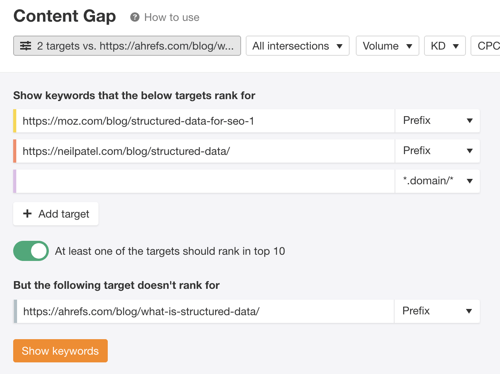
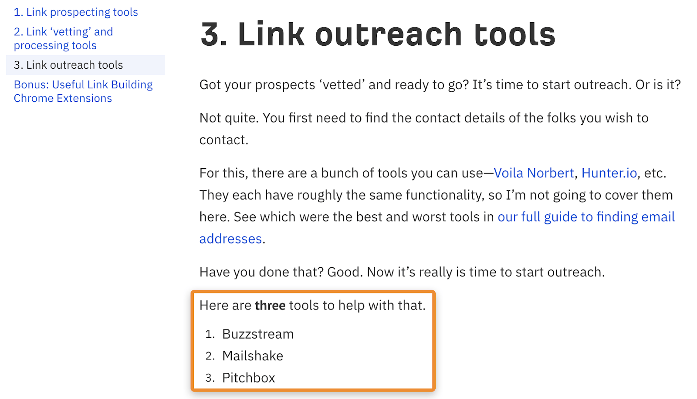

Most first drafts aren’t perfect. You’ll almost certainly miss important points, which can hinder your page’s ability to rank in search engines.
So here’s what you can do:Plug the URLs of the two or three top-ranking pages for your primary target keyword in Ahrefs’ Content Gap tool. Then plug your page’s URL at the bottom. Hit “Show keywords” and you’ll see the keywords that one or more of the top-ranking pages rank for, but you don’t.
It looks like one of the other top-ranking pages ranks for searches related to how and where to add schema markup.
But we don’t rank for those keywords because we didn’t cover the subtopics in our post.
If we were to rectify that issue by covering the topic in the post, it’s likely that we could also rank for those keywords. Even better, doing this may help improve our main keyword ranking because Google will see the page as more complete.
Backlinks are an important ranking factor, but link building can be a chore. You have to find prospects, vet them, find their emails, and then somehow convince them to link to you.
If that sounds daunting, an easier way to get started is to send emails to everyone you link to.
For example, we recommend a bunch of link building tools in this post.
It would be easy enough to reach out to their founders or marketing managers and let them know about the recommendation.
Here’s what that might look like for Buzzstream:Hey [Name],
Long time Buzzstream user and superfan of your tool. Just wanted to let you know that I recommended y’all in our latest post about link building tools. Hope it sends some well-deserved customers your way.
Cheers,
Josh
Note that you shouldn’t ask for a link in this email. That’s not the point of this tip. The point is to make contact and start a conversion. If your content is unique and well-written, you’ll often receive compliments. That naturally leads to shares and sometimes link opportunities like guest posts and other collaborations.